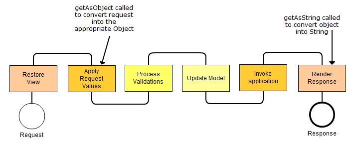

Java Server Faces are based on Facelets and their Expression Language.
In short, the use of Facelets reduces time and effort that had to be planned for development and deployment.
A Facelet defines the content of a web page, for their Web applications. With Facelets, it is possible to combine content from XHTML documents and build componenttrees. In JSF 2.0 Facelets take the place of JSP. Facelets are faster by 10-15% compared to JSP in building a page. Problems with the combination of components and standard HTML content were also eliminated in Facelets. The code reuse is ensured by the support of templates and Composite Components. Functional expandability of components and other server-side objects by adapting. Another advantage of Facelets against JSP is the (at least partially) support the JSTL. (JavaServer Pages Standard Tag Library). With the special JSFC attribute the Facelets-compiler can convert any XML elements in components. Here is a code fragment:
<input id="firstName" jsfc="h:inputText"
value="#{customer.firstName}"/>
A disadvantage of Facelet is, that the markup independence of JSF gets lost and alternative renderer perhaps can no longer be used.
The Lifecycle of a Facelet consists of 6 Phases and is displayed in the next Image:
The Expression Language is primarily suitable to access beans in the scopes of a JSP. In addition, simple mathematical operations and Boolean expressions are possible, the used in connection with branching. Expression Language expressions are identified by special delimiters. They begin either with "$ {" or "# {" and ends with "}" $ {expression} or # {expression} In summary, EL provides the ability to use simple expressions to perform the following tasks.